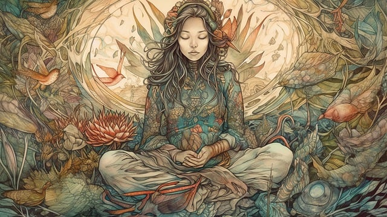

Soy Denise
Coach de vida y terapeuta holística, mi misión es acompañarte en tu proceso de sanación y equilibrio.
Herramientas de sanacion
Coaching de Vida
Te acompaño en procesos de autoconocimiento y crecimiento personal.

Registros Akáshicos
Accede a la sabiduría universal para sanar y liberar bloqueos emocionales.
Constelaciones Familiares
Sanamos patrones familiares y desbloqueamos situaciones de la vida.

Meditaciones Guiadas
Te guiaré en prácticas de meditación para encontrar paz y conexión interior.
Registros Akáshicos
Accede a la sabiduría universal para sanar y liberar bloqueos emocionales.
Constelaciones Familiares
Sanamos patrones familiares y desbloqueamos situaciones de la vida.
Meditaciones Guiadas
Te guiaré en prácticas de meditación para encontrar paz y conexión interior.
Meditaciones Guiadas
Te guiaré en prácticas de meditación para encontrar paz y conexión interior.